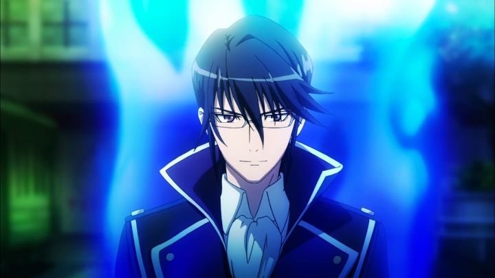

"K" is a very good looking anime. From Studio GoHands, a relatively new animation studio that hasn't yet made a bad looking animation, this see(ms to be almost entirely about style, in visuals, music, story, and characters. Clear from the moment the opening starts, the result is one of the sexiest shows you'll ever see. There's a bit of substance behind it too, but you'll have to search for it.Set in a near future version of Tokyo, Shiro is a simple student without a care in the world. That is, until a video surfaces of him shooting another man in the middle of the night. He learns about the seven Kings and their clans, who secretly run everything in the world, and the one that was shot happens to be a member of the Red clan. Naturally, these clan members (all of whom have elemental powers for fighting) start hunting down Shiro, who in turn seeks out to prove his innocence.It's actually an interesting setup, and the mystery keeps you in suspense throughout the thirteen episode series. Shiro (conveniently) lost his memories, so whether or not he actually killed someone is up in the air. His relationships with his fellow school students is standard, but should help fans who enjoy that over-abundant genre. The biggest standout is the other Kings, and their clans. There's a silent respect between them, and yet a ferocious political tension for them to tear into each other, both within and outside their own clansmen. Even with the interesting setup, style comes before substance. Sexy is the best way to describe the show, since every character seems unusually handsome or cute or hot. Especially the Kings: with their deep English dubbed voices and cool hair, clothes and smiles, they will certainly get girls to swoon. Some of these male Kings suggest they are VERY good friends, if not more, which will no doubt excite your imagination. Don't worry, men, the few girls in the show also wear very short skirts, and there is a magical cat named Neko that likes to transform into a naked woman (this is anime, after all).  Yes, visuals are top notch in the show. Not the best of the best, but still among the best. Between the action scenes and character design (and the fact that a famous cosplayer takes up most of the bonus features on the disc), it's clear style came before the story. Music is also more memorable than most shows, and quite good, if somewhat repetitive. The English dub is fitting for all the characters.The ending is actually worth the payoff, if somewhat obvious in asking for a sequel, and a little too close in comparing the Kings to biblical characters in order to heighten self-importance. Overall, it is worth the watch, and worth the bluray purchase.The biggest complaint I have is the name. Seriously? "K?" It doesn't do any favors to fans trying to search for it in Google.
- "Ani" More reviews can be found at : https://2danicritic.github.io/ Previous review: review_Juni_Taisen_-_Zodiac_War Next review: review_K_-_Missing_Kings